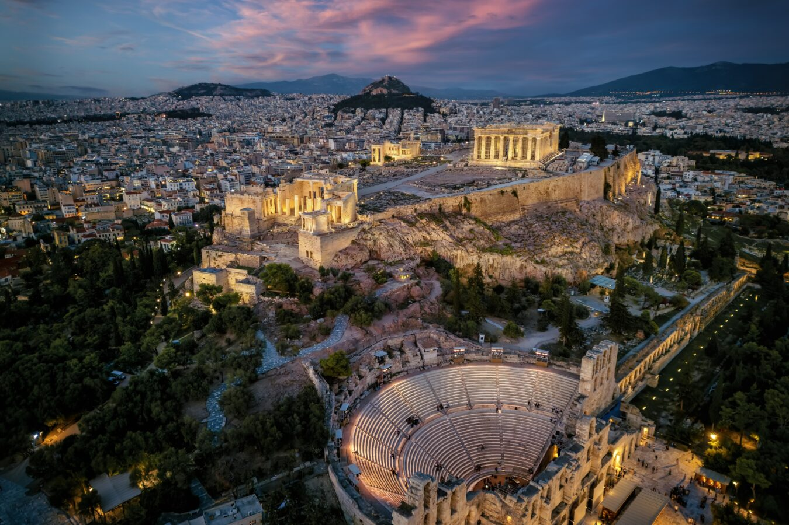

Vēsture, kultūra, daba un izcila atpūta
Bagāta vēsture un kultūra Grieķija ir Rietumu civilizācijas šūpulis – demokrātija, filozofija, teātris un olimpiskās spēles nāk tieši no šejienes. Ceļojot, var redzēt tūkstošiem gadu senu vēsturi savām acīm
Atēnas ir viena no vecākajām nepārtraukti apdzīvotajām pilsētām pasaulē (vairāk nekā 3000 gadu), un tās tiek uzskatītas par Rietumu civilizācijas šūpuli. Šeit burtiski dzima idejas, kas ietekmē mūsu dzīvi vēl šodien.
